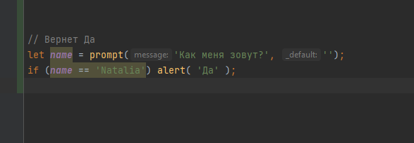
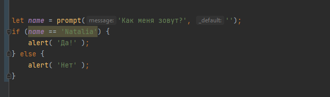
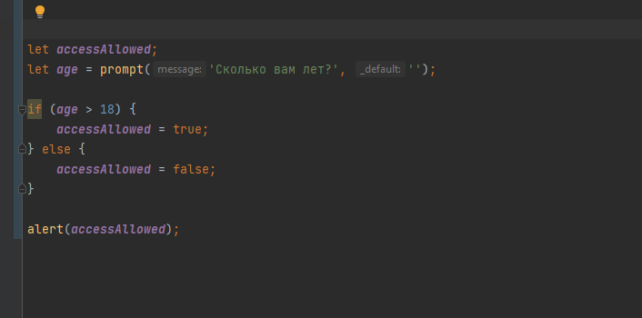

Инструкция if(...) вычисляет условие в скобках и, если результат true, то выполняет блок кода.
Он выполняется, когда условие ложно.
Иногда нам нужно определить переменную в зависимости от условия.

Так называемый «условный» оператор «вопросительный знак» позволяет нам сделать это более коротким и простым способом.
Оператор представлен знаком вопроса ?. Его также называют «тернарный», так как этот оператор, единственный в своём роде, имеет три аргумента.
Сначала вычисляется условие: если оно истинно, тогда возвращается значение1, в противном случае – значение2